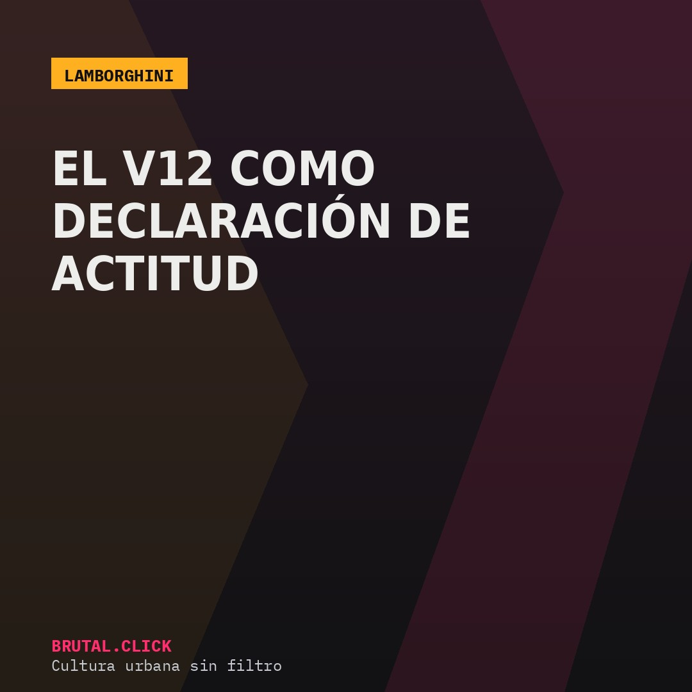
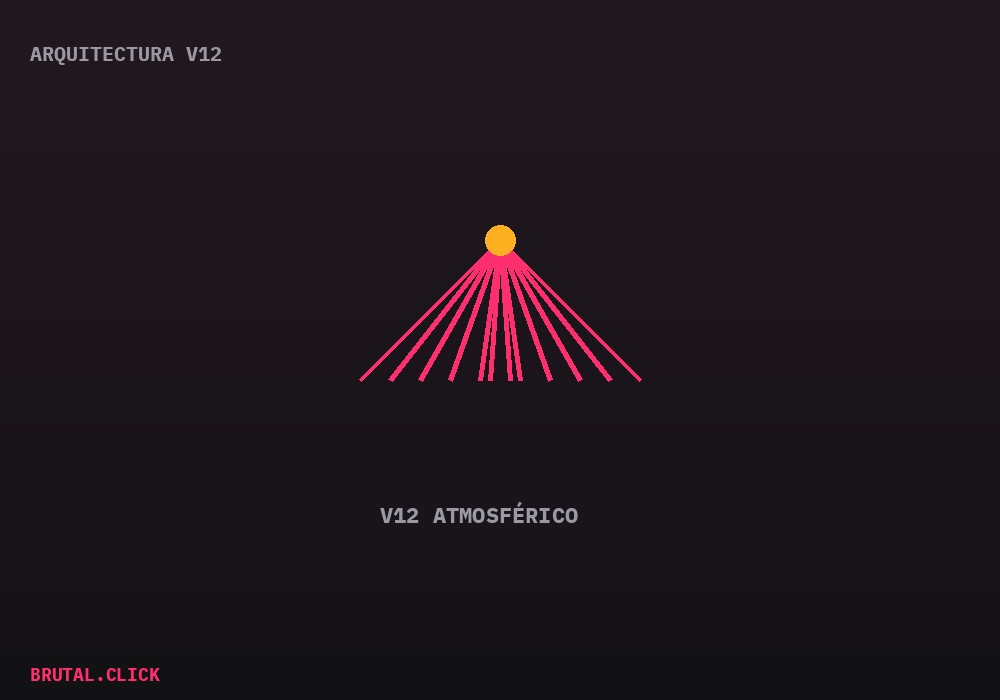

Este artículo incluye enlaces de afiliación a productos relacionados (modelos a escala, pósters). No hay comisión posible por la venta de vehículos nuevos. Si compras a través de estos enlaces, podemos recibir una pequeña comisión sin coste extra para ti.

La historia de Lamborghini empieza, según cuenta la leyenda de la marca, con una queja: Ferruccio Lamborghini, fabricante de tractores convertido en empresario del automóvil, se quejó del embrague de su Ferrari, y Enzo Ferrari le respondió que se dedicara a fabricar tractores. En 1963, Lamborghini fundó su propia marca de superdeportivos como respuesta directa.
El Miura y el nacimiento del superdeportivo moderno
El Miura de 1966 está considerado por buena parte de la crítica especializada como el primer superdeportivo moderno: motor central-trasero, líneas extremas para su época y un carácter mucho menos contenido que el de sus rivales italianos. Desde ese momento, Lamborghini construyó su identidad de marca alrededor de ser el contrapunto más radical a Ferrari, nunca el heredero discreto.

El motor V12 atmosférico, presente en la marca desde sus orígenes, es el elemento técnico que mejor resume esa filosofía: en una época en la que el resto de la industria migra hacia motores más pequeños sobrealimentados o híbridos, Lamborghini ha mantenido el V12 sin turbo en sus modelos más radicales como una decisión explícitamente emocional, no de eficiencia.
De Sant'Agata a la era híbrida, sin perder el carácter
Incluso con la llegada de la electrificación —inevitable para cualquier fabricante de superdeportivos hoy—, Lamborghini ha optado por combinar el V12 con motores eléctricos en vez de sustituirlo directamente, una solución de compromiso que busca mantener la firma sonora y el carácter de la marca mientras cumple con la normativa de emisiones.
Modelo a escala Lamborghini Miura 1:18
El origen del superdeportivo modernoPóster Lamborghini V12 (corte técnico)
Para la pared del garajeEnlaces pendientes de activar el programa de afiliados.